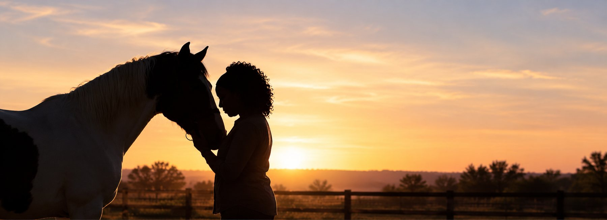
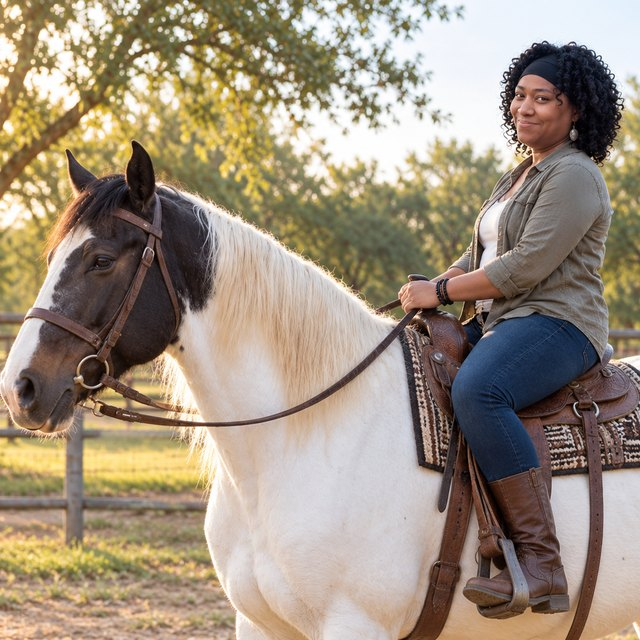

Victorious Beginnings Ranch
A Safe Haven for the Trafficked and Vulnerable
Austin, Texas, USA

Nichole Henderson
Since founding Victorious Beginnings in 2012, I have been dedicated to providing trauma-informed, faith-based behavioral health services to children, individuals, couples, and families from diverse backgrounds.
My approach is rooted in faith, unconditional acceptance, and the belief that everyone deserves the opportunity to heal and experience wholeness. I trust God to guide the healing process and strive to create a supportive environment where individuals feel seen, heard, and valued.
Several years ago, a revelation through a dream helped clarify my calling to work with women who have survived sex trafficking and to establish a ministry in Austin, Texas. Although I did not know exactly how this vision would unfold, I continued to trust God’s timing and guidance. Since then, I have relocated from Nevada to Austin to pursue this calling.
As I continue to build support for this mission, I am launching a new branch of Victorious Beginnings: Victorious Beginnings Ranch, a safe haven dedicated to supporting women impacted by sex trafficking. Through community partnerships, outreach, mental health services, and advocacy, my vision is to help foster healing, restore hope, and create opportunities for survivors to build healthier, more fulfilling lives.

About THE VICTORIOUS BEGINNINGS RANCH
Helping Women Recognize Their Worth, Strength, and Potential
Victorious Beginnings Ranch empowers women impacted by sex trafficking to begin their journey toward healing, recovery, and independence. Through trauma-informed care, equine-assisted services, holistic health and wellness, education, and skills training, we strive to create a supportive environment where survivors can rebuild their lives and discover their strength.
Upon completing the program, participants may have opportunities to remain connected to the community through an alumni network, pursue relevant certifications, and access educational and vocational pathways that support their continued growth and independence.
Understanding the Need
Research highlights the urgent need for comprehensive, trauma-informed support for individuals affected by sex trafficking. A 2016 University of Texas study examined the experiences of commercially sexually exploited youth in Texas, underscoring the importance of prevention, intervention, and survivor-centered services.
Survivors may face significant barriers to recovery, including economic instability, limited access to resources, and difficulties establishing safe, trusting relationships. Victorious Beginnings Ranch seeks to address these challenges by fostering a community grounded in compassion, empowerment, education, and holistic support.
“My calling has always been grounded in servant leadership.”
My journey began with volunteering in faith-based services and completing an internship at a church. I am a Licensed Marriage and Family Therapist and am pursuing a Ph.D. in Education and Organizational Leadership. I also hold a Master of Science in Counseling, with a focus on Marriage, Family, and Child Therapy, and a bachelor’s degree in Business Management.
I was introduced to the therapeutic benefits of working with horses and recognized the potential of equine-assisted services to create a supportive environment for healing. Horses are sensitive, responsive animals, and interactions with them may help participants develop trust, self-awareness, and emotional regulation as part of a broader therapeutic approach.
As an EAGALA-certified professional, I am committed to continuing my education and strengthening my team’s ability to support survivors through an integrated approach that addresses emotional, relational, physical, and spiritual well-being.
The Vision
My work with survivors is to share messages they can integrate through spiritual practices that are meaningful to their needs as they rebuild their sense of self-worth and identity through the healing journey.
“You are the hero of your own story.”
“You are important.”
“You are enough.”
My vision is to connect with human service organizations in Nevada and Texas that work with underserved populations and intersect with sexual and domestic violence. Influence and help provide justice to those without a voice in Las Vegas and Texas. We will offer strategic education and mental health programs in both communities.
The Pillars
Pillars of Victorious Beginnings Ranch include:
A Safe Haven
Creating a safe haven for survivors with access to trauma-informed and equine therapy, continuing education, and an alumni mentorship program.
A Community
Developing community support groups and educational workshops with a toolkit that includes regional resources and education for survivors, family members and supporters, and service providers. Topics include: How to approach survivors and survivor needs coordinate community resources create awareness around challenges and community needs.
A Support Network
Connecting a network of regional support through community partnerships for wrap-around care and to raise awareness of the growing sex trafficking epidemic.
Nonprofit Transparency
Learn more about Victorious Beginnings Ranch
and its nonprofit profile.
EIN: 99-4112642
View Our Candid Profile (opens in a new tab)Help Build a Safe Haven for Survivors
Your generosity can help Victorious Beginnings Ranch establish a safe haven where survivors of sex trafficking can access supportive housing, trauma-informed care, and resources for healing and rebuilding their lives.
Your Donation Makes a Difference
Funds raised will help support the development and operation of the ranch, including:
Ranch Property
Purchasing or leasing a suitable location.
Safe Housing
Providing a secure, supportive place for survivors to stay.
Program Development
Building partnerships and expanding access to supportive services.
Outreach and Awareness
Developing educational materials, marketing, and fundraising initiatives.
Essential Operations
Covering necessary administrative and consulting expenses.
Every contribution brings us closer to creating a community where survivors can find safety, support, and renewed hope.
Be Part of the Change
Together, we can help build a future where survivors are supported, empowered, and given opportunities to thrive.
Donate today to help make Victorious Beginnings Ranch a reality.
For more information about supporting our mission, contact nichole@victoriousbeginnings.org.
Volunteer With Us
Be part of creating a safe haven for healing, hope, and restoration.
Become a Volunteer (opens in a new tab)